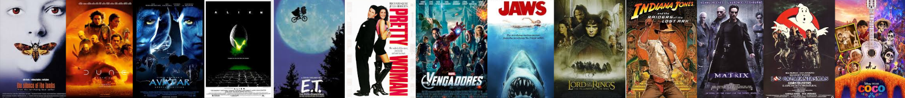

Publicado por Álvaro el 1 jun 2025
Visualmente impresionante. Villeneuve se supera. Aunque sigo pensando que hay demasiada pausa entre
escenas clave.
Publicado por Laura88 el 2 jun 2025
Me encantó, pero me perdí un poco si no has leído los libros. Aun así, Hans Zimmer lo vuelve a
petar.
Publicado por SofiMarvel el 1 jun 2025
¡Por fin Natasha tuvo su película! Me gustó mucho la relación con su "familia", sobre todo Yelena,
que se roba cada escena.
Publicado por RafaCine el 2 jun 2025
Creo que llegó demasiado tarde. La historia es buena, pero ya sabíamos su destino, así que el
impacto fue menor.
Publicado por YelenaFan el 2 jun 2025
Florence Pugh lo hace brutal. Me encantó el humor y la dinámica entre hermanas. ¡Quiero ver más de
ella en el UCM!
Publicado por CineCrítico87 el 3 jun 2025
La acción está bien coreografiada, pero el villano es muy flojo. Taskmaster merecía mucho más
desarrollo.
Publicado por MartaG el 3 jun 2025
Me emocionó más de lo que esperaba. Aunque no es perfecta, tiene corazón y cierra bien el arco de
Natasha.
Publicado por DarkNite el 30 may 2025
La atmósfera oscura es brutal, por fin una Gotham sucia y realista. Pattinson me sorprendió.
Publicado por Cinefilo_99 el 31 may 2025
Me gustó, pero creo que le sobran como 20 minutos. La persecución con el Pingüino fue lo mejor.
Publicado por TaniaF el 29 may 2025
Es un viaje rarísimo pero al final lloré. Michelle Yeoh se merece todo. Confusa pero maravillosa.
Publicado por LuisGM el 29 may 2025
No es para todos. Si buscas algo tradicional, quizá no te guste. Pero si entras en su juego... ¡es
una joya!
Publicado por IreneCine el 28 may 2025
Técnicamente impecable, pero el guion sigue flojo. Cameron se centra demasiado en lo visual.
Publicado por PedroFan el 28 may 2025
A mí me emocionó. El mundo acuático es increíble. No todo tiene que ser solo historia.